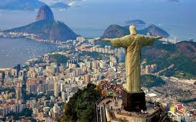

Стойко ассоциирующаяся с танго, гаучо и говядиной Аргентина длительное время была самым высокоразвитым и стабильным государством Латинской Америки. Однако в последние годы, после долгого периода политической сму ты, военной диктатуры и экономических трудностей страна с великим трудом выбралась из глубокого финансового кризиса.
Отличающаяся большим разнообразием ландшафтов Аргентина расположена в Южной Америке и граничит с Чили (на западе), Бо ливией и Парагваем (на севере), Бразилией (на северо-востоке) и Уругваем (на востоке). Местона хождение основных физико-географических регионов отвечает рас положению важнейших геологи ческих структур: Лаплатской низ менности, Патагонии и Анд.
Рельеф Аргентины отличается едва ли не наибольшим в Америке разнообразием форм во всей Южной Америке.
Hа холодных океанских пляжах Патагонии можно увидеть лежбища морских необычайно общительных южных(патагонских) котиков.
| Полное название: | Аргентинская Республика (República argentina) |
| Площадь: | 2766,9 тыс. км |
| Столица: | Буэнос-Айрес |
| Главные города: | Кордова, Росарио, Ла-Плата, Парана, Санта- Фе, Сан-Мигель-де-Тукуман, Мендоса |
| Глава государства: | президент Кристина Фернандес де Киршнер (с 2007 г.) |
| Государственный строй: | президентская республика |
| Экспорт: | зерно (пшеница, кукуруза), мясо (говядина, баранина), шерсть, кожи, живой скот, растительные масла, экстракт дерева квебрахо (кебрачо), фураж, вино, сырая нефть и нефтепродукты |
| Денежная единица: | песо |
| Численность населения: | 40,3 млн |
| Этнический состав: | выходцы из Европы (в основном из Испании и Италии), метисы, индейцы |
| Cредняя продолжительность жизни: | 75,5 года (женщины 79, мужчины 72) |
| Естественный прирост населения: | 1.2% |
| Языки: | испанский (официальный), местные индейские наречия (в т. ч. гуарани) |
| Вероисповедания: | католицизм, протестантизм, иудаизм |
| Неграмотность среди населения: | 3.8% |
| ВВП: | $8253 на душу населения |
Определяющее влияние на климат Аргентины оказывает большая меридиональная протяжённость страны (четыре климатические зоны: тропическая, субтропическая, умеренная и субполярная), а также восточной части страны. Характер ная особенность Аргентины — непрерывные сильные ветры. Жаркий и влажный северный ветер предвещает приход мощных циклонов. Господствующие ветры с юга связаны с Южнотихоокеанским антициклоном — холодный ветер памперо и дующий с гор жаркий (до 40°С) ветер сонда приносят сильные засухи. Средняя температура января колеблется от 28—ЗОЮ на севере (провинции Гран-Чако, Мисьонес) до 8-10°С в Южной Патагонии и на о. Огненная Земля, а июля, соответственно, от 18°С до 0-2°С. Температурные максимумы составляют от 47°С (Гран-Чако) до —35°С в Андском высокогорье. Среднегодовое количество осадков колеблется от менее 200 мм на востоке Патаго нии до 800-950 мм в Восточной Пампе. Больше осадков выпадает только на северо-востоке (1200 мм) и в южных регионах Анд — 3000-4000 мм, местами до 6000 мм (в межгорных котловинах не более 200 мм).
Расположенная на северо-востоке Аргентины Лаплатская неизменность представляет собой самый густонаселённый и важный в экономическом отношении регион страны. По климатическим условиям и характеру растительного покрова здесь выделяется такие при родно-географические области, как Пампа, Гран-Чако и Аргентинское Междуречье. Сердце Аргентины — Пампа, — это обширная плодородная равнина, раскинувшаяся между реками Рио-Колорадо на юге и Рио-Саладо (в её верхнем отрезке, где называется сначала Гуачипас, затем Хураменто или Рио-де-Пасахе) на севере. С северо-запада её окаймляют горы Сьеррас-де-Кордо- ва (высшая точка Чампаки (2884 м)), а с юго-востока — масси вы Сьерра-де-ла-Вентана (высшая точка Трес-Пикос (1243 м)) и Сьерра-дель-Тандиль (490 м). Природ ная растительная формация Пампы — степь, на значительной части которой развились плодородные чернозёмные почвы. Большие площади Пампы заняты посе вами пшеницы, кукурузы, сои, подсолнечника, арахиса, плантациями овощей, фруктовыми садами и оливковыми рощами. Огромную роль в экономике края играет мясное животноводство, а на востоке — овцеводство. К северу от Пампы лежит область Гран-Чако, состоящая из двух частей — Центральной (Чако-Сентраль), покрытой густыми низкорослыми лесами и тропическими зарослями с преобладанием пальм и Южной (Чако-Аустраль), где господствует саванновая растительность. На здешних болотах (местами солонча ковых) растут гигантская кувшинка Виктория-регия и водяной гиацинт, а в широких, затопляемых паводками долинах рек Рио-Бермехо и Рио-Саладо — галерейные леса. Между реками Уругвай и Парана расположен важный в аграрном отношении регион — Аргентинское Междуречье, на севере которого выращивают рис и табак, в центре — цитрусовые и овощи, а на юге культивируют кукурузу, разводят крупный рогатый скот, а также выращивают парагвайский чай (йерба-мате) и тунговое дерево, из семян которого получают масло. В северной части Аргентинского Междуречья растут субтропические леса, а центральная и южная части заняты парковыми саваннами. Здесь же находится природная жемчужина мирового уровня — водопады на р. Игуасу (приток Параны). На участке аргентинско-бразильской границы река низвергается в ущелье с двух отвесных базальтовых ступеней 275 струями и потоками, разделёнными скалистыми островками, покрытыми пышной тропической растительностью. Высота падения воды составляет свыше 72м, а общая ширина обоих ступеней — до 4 км. Самый крупный и красивый среди водопадов Игуасу— «Горло Дьявола», по которому проходит грани ца между Бразилией и Аргентиной.
Горная цепь Анд, по главному хребту которых пролегает граница Аргентины и Чили, достигает максимальной высоты в своей центральной части, где к небу вздымается высочайшая вершина Южной Америки — пик Аконкагуа (6960 м). На севере Анды расходятся в стороны, захватывая обширное ком из мирта, барбариса и папоротников. Андский регион славится выращивани ем благородных сортов винограда, из которых производят отличные вина, не уступающие по качеству европейским.

Патагония вошла в состав Аргентины только в 1881 г. На севере в растительном покрове преобладают сухолюбивые кустарники и кустарнички, сбрасывающие листву на зиму. На юге доминируют злаки (ковыли, овсяницы, мятликовые), до стигающие высоты 2м. Здесь также растёт крестовник, вербена и барбарис, которые хорошо переносят холод. Из-за сухого морозного климата земледелие и выпас крупного рогатого скота воз можны только в междуречье Рио- Колорадо и Рио-Негро. Далее к югу преобладает овцеводство. В Патагонии ведётся добыча нефти, природного газа, бурого угля и железной руды. Аргентине принадлежит восточная часть о. Огненная Земля, на самом краю которого, на берегу пролива Бигль, рас положен самый южный город нашей планеты Ушуая.
Свыше 95% населения Аргентины ведут свой род от выходцев из Европы. Приток иммигрантов в страну дважды достигал своего апогея— в 1880—1930 гг. и после окончания II мировой войны, в 1948-55 гг. За период с 1850 по 1900 гг. население Аргентины выросло с 1,3 млн до 4,7 млн человек, а в 1950 г. достигло 17,2 млн. В 1914 г. иностранцы составляли почти треть жителей страны. Среди иммигрантов преобладали итальянцы (34%) и испанцы (24%), но было также немало французов, поляков, украинцев и немцев. Большинство приезжих селилось в пределах агломерации Буэнос-Айреса и в центральных провинциях. Индейцы, сосредоточенные на северных окраинах Аргентины (провинции Чако, Мисьонес) и в Патагонии, в настоящее время составляют всего 0,1% населения. По давляющее большинство аргентинцев (88%) проживает в городах.
Первые испанцы (Хуан Диас де Солис) высадились на берегах Ла- Платы в 1516 г., а в 1536 г. Педро де Мендоса основал в устье реки город Буэнос-Айрес. В 1776 г. Аргентина обрела автономию со статусом вице-королевства Ла- Плата. В 1806—07 гг. англичане дважды безуспешно пытались завладеть Буэнос-Айресом. Несмотря на свержение в 1810 г. испанского вице-короля, независимость страны от Испании была провозглашена только в 1816 г. Героем борьбы за освобождение стал генерал Хосе де Сан-Мартин. Начальный этап независимой истории прошёл под знаком соперничества унитариев из Буэнос-Айреса и представлявших интересы провинций федералистов, а позднее — многолетней военной диктатуры (1829-32 и 1835-52 гг.) генерала Хуана Мануэля де Росаса. После принятия в 1853 г. федеральной конституции, стремившийся к утверждению сильной центральной власти Буэнос-Айрес вышел из состава федерации и вновь присоединился к ней только в 1861 г., после заключения мира в войне с федералистами и частичного изменения конституции. Наступил длительный период представлявшего интересы крупных землевладельцев стабильного демократического правления, который закончился государственным переворотом 1930 г. После очередного военного переворота (1943 г.) на политической сцене появился полковник Хуан Доминго Перон. Проведённые им реформы трудового законодательства (введение 8-часового рабо чего дня, оплачиваемых отпусков, выплаты социальной помощи и пособий по безработице) и поддержка со стороны окрепших профсоюзов обеспечили ему победу на президентских выборах 1946 г. Возглавив страну, Перон взялся за коренную перестройку экономики, однако в 1955 г. его реформы потерпели крах из-за нехватки средств на их реализацию и мирового кризиса на рынке мяса(главного экспортного продукта Аргентины). Перон был вынужден покинуть страну, но в сентябре 1973 г. снова занял пост президента. После его смерти (1.07.1974 г.) президентский пост заняла его вдова Мария Эстела Мартинес де Перон (Исабелита), и начался затяжной период фракционной борьбы в перонистском движении. Этим воспользовалась военная хунта, захватившая власть в марте 1976 г.
Быстро подавив методами жестоко го террора волнения в обществе, армия не сумела справиться с нарастающим кризисом и огромными темпами инфляции. Правящая военная хунта попыталась разрядить социальную напряжённость, проводя агрессивную внешнюю политику по отношению к соседям. Сначала она спровоцировала конфликт с Чили (1978—79 гг.) за спор ные острова в проливе Бигль, а за тем, в апреле 1982 г., предприняла вторжение на Фолклендские (Мальвинские) о-ва, которые свыше 150 лет удерживались англичанами. Сокрушительное поражение в этой военной авантюре привело к падению хунты и восстановлению демократии. За годы президентства Карлоса Менема (1989—99 гг.) удалось остановить спад экономики, преодолеть инфляцию и привлечь в страну крупные иностранные инвестиции (тогда в Аргентине были построены автосборочные заводы известных фирм). В декабре 1999 г. новым президентом стал Фернандо де ла Руа, продолживший прежнюю экономическую политику. Однако на рубеже 2001-2002 гг. огромный внешний долг привёл к новому финансовому кризису, а массовые народные выступления в Буэнос-Айресе вынудили Ф. де ла Руа подать в отставку и бежать из страны (2001 г.). Прошедшие в 2003 г. парламентские выборы под твердили преобладание перонистов, а на состоявшихся в 2007 г. президентских выборах победила супруга предыдущего президента Несто ра Киршнера — Кристина Фернан дес де Киршнер.